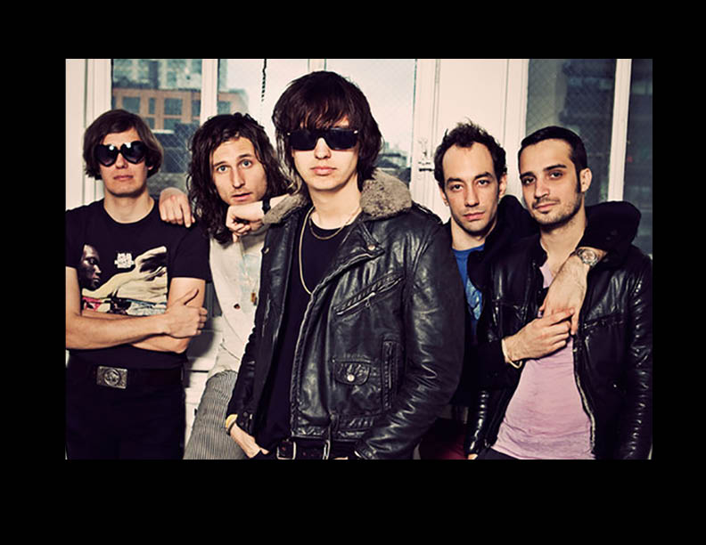

The Strokes are a multi-platinum American rock band formed in New York City in 1998, consisting of Julian Casablancas (lead vocals), Nick Valensi (guitar, keyboard, backing vocals), Albert Hammond Jr. (guitar, keyboard, backing vocals), Nikolai Fraiture (bass) and Fabrizio Moretti (drums, percussion).
In 2001, the band released their debut album, titled 'Is This It’. It was certified platinum in the U.S. & UK and received gold certification in a myriad of other countries around the world. Their sophomore effort, 'Room On Fire' was released in 2003, and reached gold status in the U.S. and platinum once again in the UK..
Subsequent full-length releases came with 'First Impressions Of Earth' in 2006, ‘Angles' in 2011, and 'Comedown Machine'in 2013. Their most recent studio recording was an EP released in the summer of 2016, entitled 'Future Present Past' via Julian Casablancas’ own Cult Records label. The band is presently an RCA recording artist via a venture with Cult Records.